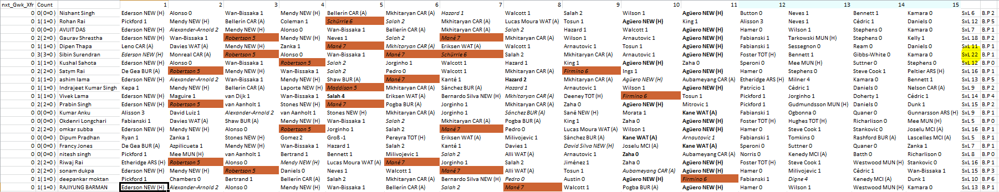

FPL new Era

Animation
AudoVidos
I wanted to write this thing because i cant handle this situation its getting beyond.. I have always thought like when i get married and i start my married life, I will not have the
problems the other ordinary people are facing.... because i had the superPowers of dale carnegie...but i was wrong.. now i can relate to the suffering of people involved in the marriages. One of the biggest issue they will face is of expectations...one who can conquer this expectations will have the people in his palms..
In my case i worked my ass off to meet almost all the expectations of my spouse from monday to friday.. but when on saturday when i got to hear that i didnt do anything good ever.. my blood boiled and i lost it.... I was indignant for the fact that i all my credits were wiped off .. just because i didnt give her rice in morning..or rather i asked her did she wanted
yesterdays stale rice.. since she dosent like old rice ...or any of the old foods like me....There is a back story to this...generally for food matters i dont think of the very next day ..My usual days be like waking up around 10-10.30 and getting back to the work.. which has to be started at sharp 10.. so at times when work load is too much i dont even get a chance to eat anything till 5 in the eveining or till the work is completed...so whats i am losing her is my appetite(reverse of appetide) .. i would be starving and will lose control over my eating habits.....................................................Everzthing is sorted now...
Embedded
Excel fileeee